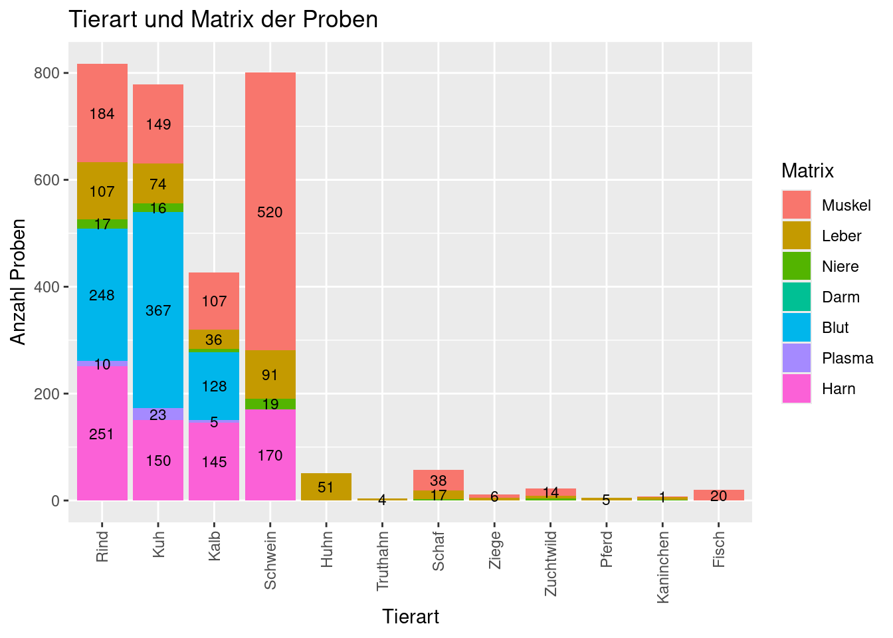
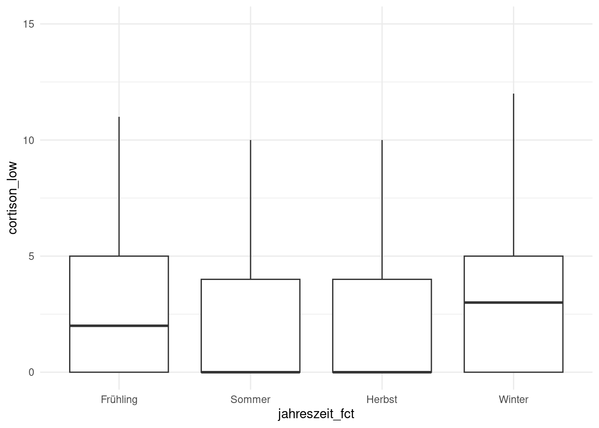
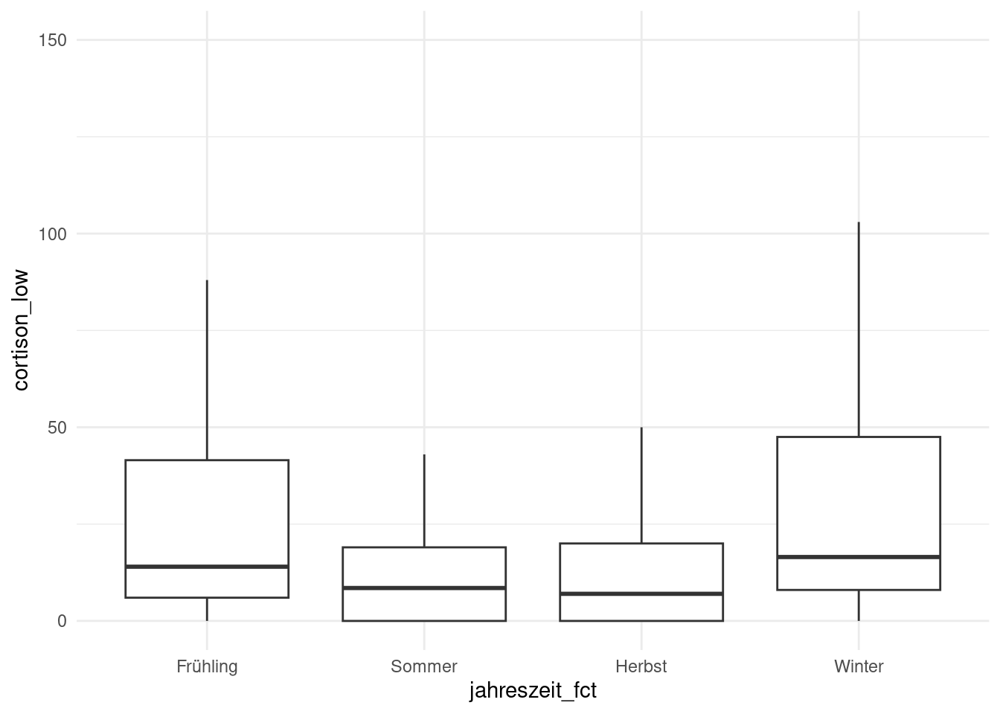
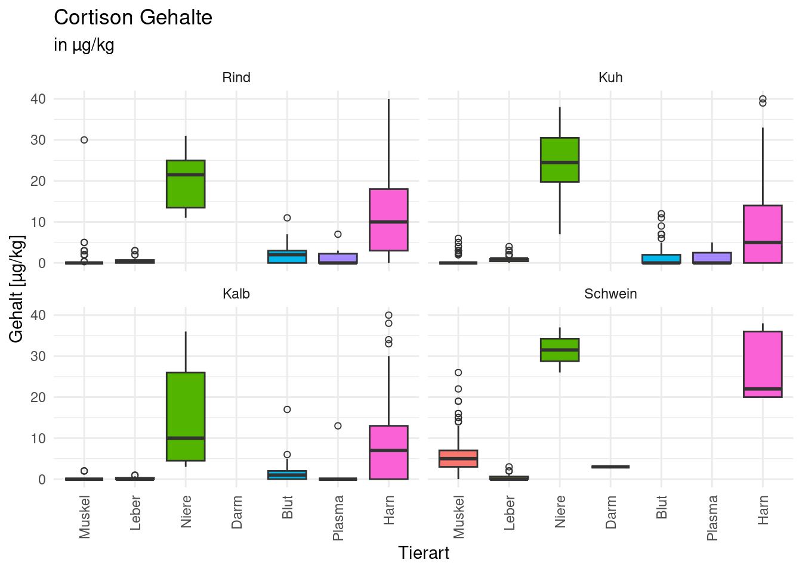
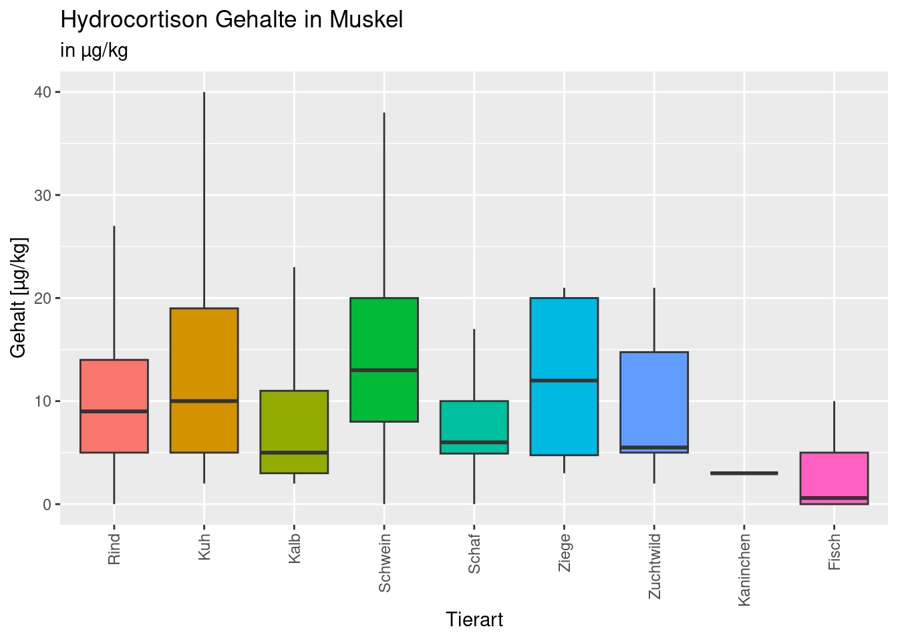
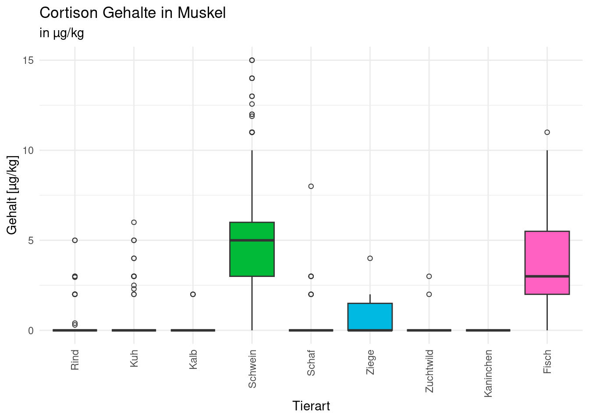
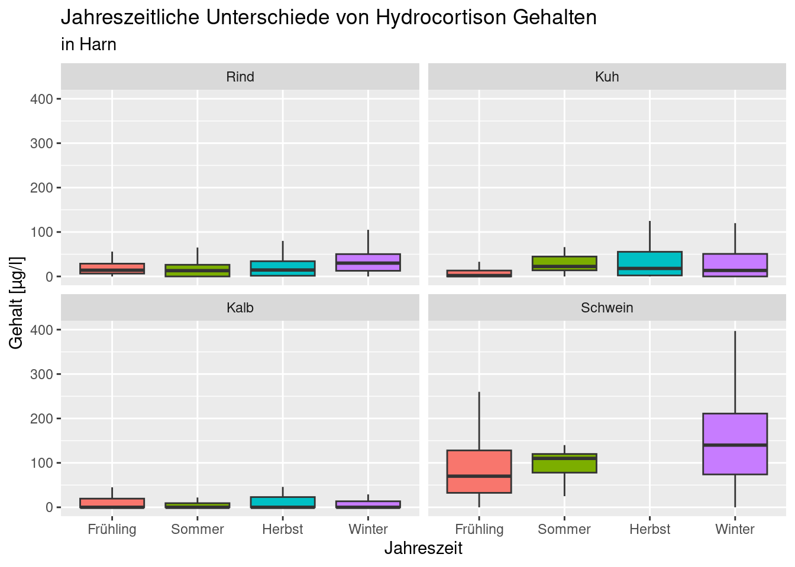
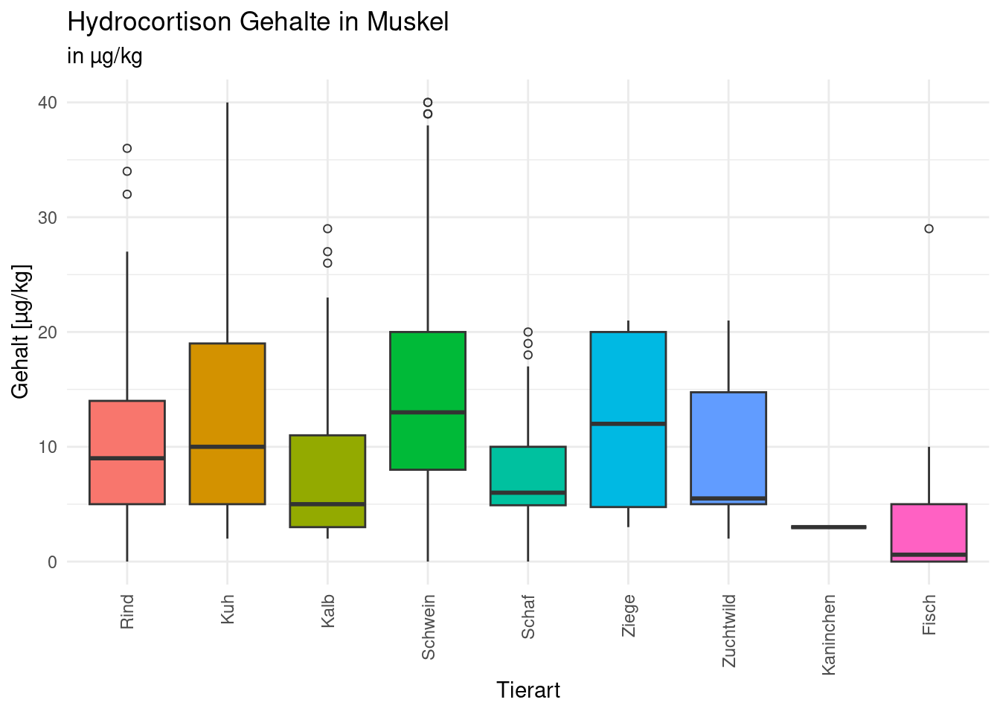

library(tidyverse)
library(ggthemes)
library(gt)Cortison- und Hydrocortisongehalte in tierischen Produkten
Datenauswertung von im Rahmen des Nationalen Fremdstoffuntersuchungs Program gemessenen Proben
Einleitung
Im Rahmen des Nationalen Fremdstoffuntersuchungs Programm (NFUP) wurden in Proben von tierischen Lebensmitteln die Rückstände von Cortison und Hydrocortison gemessen. Die Messung der Substanzen erfolgte mittels Flüssigchromatograghie (LC) gekoppelt mit hochauflösender Massenspektrometrie (HRMS)(Kaufmann u. a. 2020),(Kaufmann u. a. 2019). Dabei werden zwischen 45 und 200 Tierarzneimittel quantifiziert.
Cortison und Hydrocortison kommen natürlich in Produkten tierischer Herkunft vor. Für die Substanzen gibt es ausser für Milch keine Grenzwerte oder sonstige Beurteilungskriterien.
Mit der folgenden Datenanalyse soll gezeit werden ob sich von den gemessenen Konzentrationen ein Beurteilungskriterium ableiten lässt oder ob die Substanzen als Positivkontrolle für die Methode verwendet werden können.
Die Daten wurden zwischen 2019 bis 2024 erhoben.
Analyseziele
Es soll gezeigt werden wie sich die Konzentrationen von Cortison und Hydrocortison in den mehr als 2000 Messungen verteilen.
Gibt es Unterschiede zwischen einzelnen Matrizes? z.B Muskel und Leber
Gibt es Unterschiede zwischen verschiedenen Tierarten? z.B. Rinder und Schweine
Gibt es Veränderungen innerhalb eines Jahres oder zwischen den Jahren?
Daten
Resultate der im Rahmen des NFUP durchgeführten Messungen durch die Abteilung Tierarzneimittel Analytik des Kantonalen Labors Zürich.
# read_csv2 für ";" geteilte Tabelle
cortison_import <- read_csv2(here::here("daten/raw/Cortison_csv.csv"))
hydrocortison_import <- read_csv2(here::here("daten/raw/Hydrocortison_csv.csv"))Datenaufbereitung
Daten zusammenführen und Spaltentitel ändern. Die Tierart- und Matrixnamen wurden korrigiert und vereinheitlicht. Alle Messresultate wurden von Text in numerische Werte geändert.
# merge mit all = TRUE um auch Proben mit nur einem Resultat in der Tabelle zu behalten
data_merge <- merge(cortison_import, hydrocortison_import, by="ProbenID", all = TRUE)
# Konzentrationen als Zahl(numeric)
data_numeric <- mutate(data_merge,
cortison_conc = as.numeric(ResultatResultat.x)) |>
mutate(data_merge,
hydrocortison_conc = as.numeric(ResultatResultat.y))
# ware und datum in einer Spalte auch wenn nur ein Wert gefunden
data_ware2 <- data_numeric |>
mutate(ware = ProbeWare.y)
data_ware3 <- data_ware2 |>
mutate(ware = case_when(
ware = is.na(ware) ~ ProbeWare.x,
.default = ProbeWare.y
))
data_ware3 |>
count(ware)
# ware aufräumen
data_ware_clean <- data_ware3 |>
mutate(ware = case_when(
ware == "Schwein - D\xe4rme" ~ "Schwein - Darm",
ware == "Kuh - But" ~ "Kuh - Blut",
ware == "Blut - Kuh" ~ "Kuh - Blut",
ware == "Blut - Kalb" ~ "Kuh - Blut",
ware == "Kalb- Blut" ~ "Kalb - Blut",
ware == "Fisch -Muskel" ~ "Fisch - Muskel",
ware == "Damhirsch - Muskel" ~ "Zuchtwild - Muskel",
ware == "Gehege- oder Zuchtschalenwild - Leber" ~ "Zuchtwild - Leber",
ware == "Kalb - Blut" ~ "Kalb - Blut", # zwei leerschläge!
ware == "Kalb-Blut" ~ "Kalb - Blut",
ware == "Kalb- Muskel" ~ "Kalb - Muskel",
ware == "Kalbsfleisch" ~ "Kalb - Muskel",
ware == "Kalb - Urin" ~ "Kalb - Harn",
ware == "Kuh - Urin" ~ "Kuh - Harn",
ware == "Kalb- Leber" ~ "Kalb - Leber",
ware == "Kuh -Blut" ~ "Kuh - Blut",
ware == "Kuh- Blut" ~ "Kuh - Blut",
ware == "Kuh-Blut" ~ "Kuh - Blut",
ware == "Kuh- Leber" ~ "Kuh - Leber",
ware == "Kuh- Muskel" ~ "Kuh - Muskel",
ware == "Milchkuh - Blut" ~ "Kuh - Blut",
ware == "Rind - Kalb - Kuh - Muskel" ~ "Rind - Muskel",
ware == "Rind / Kalb / Kuh - Blut" ~ "Rind - Blut",
ware == "Rind / Kalb / Kuh - Harn" ~ "Rind - Harn",
ware == "Rind / Kalb / Kuh - Leber" ~ "Rind - Leber",
ware == "Rind / Kalb / Kuh - Urin" ~ "Rind - Harn",
ware == "Rind Kalb Kuh - Leber" ~ "Rind - Leber",
ware == "Rind Kalb Kuh - Leber" ~ "Rind - Leber",
ware == "Rind - Urin" ~ "Rind - Harn",
ware == "Rind- Blut" ~ "Rind - Blut",
ware == "Rind -Blut" ~ "Rind - Blut",
ware == "Rind- Leber" ~ "Rind - Leber",
ware == "Rind- Muskel" ~ "Rind - Muskel",
ware == "Rind-Blut" ~ "Rind - Blut",
ware == "Rind/Kalb/Kuh - Blut" ~ "Rind - Blut",
ware == "Rind / Kalb / Kuh - Harn" ~ "Rind - Harn",
ware == "Rind / Kalb / Kuh - Leber" ~ "Rind - Leber",
ware == "Rind / Kalb / Kuh - Urin" ~ "Rind - Harn",
ware == "Rind/Kalb/Kuh - Harn" ~ "Rind - Harn",
ware == "Rind/Kalb/Kuh - Leber" ~ "Rind - Leber",
ware == "Rind/Kalb/Kuh - Muskel" ~ "Rind - Muskel",
ware == "Rind/Kalb/Kuh - Niere" ~ "Rind - Niere",
ware == "Rind/Kalb/Kuh - Plasma" ~ "Rind - Plasma",
ware == "Rind/Kalb/Kuh- Blut" ~ "Rind - Blut",
ware == "Schafe - Leber" ~ "Schaf - Leber",
ware == "Schafe - Muskel" ~ "Schaf - Muskel",
ware == "Schafe - Niere" ~ "Schaf - Niere",
ware == "Schweine - Muskel" ~ "Schwein - Muskel",
ware == "Stier - Blut" ~ "Rind - Blut",
ware == "Stier - Harn" ~ "Rind - Harn",
ware == "Ziegen - Leber" ~ "Ziege - Leber",
ware == "Ziegen - Muskel" ~ "Ziege - Muskel",
ware == "Muni - Harn" ~ "Rind - Harn",
ware == "Muni - Leber" ~ "Rind - Leber",
ware == "Muni - Muskel" ~ "Rind - Muskel",
ware == "Ochs - Harn" ~ "Rind - Harn",
ware == "Ochs - Muskel" ~ "Rind - Muskel",
ware == "Ochse - Harn" ~ "Rind - Harn",
ware == "Ochse - Leber" ~ "Rind - Leber",
.default = ware
))
data_ware3 |>
count(ware)
data_ware_clean |>
count(ware)
# ware trennen in tierart und matrix
data_matrix_tierart <- data_ware_clean |>
separate(ware, c("tierart","matrix"))
data_matrix_tierart |>
count(matrix)
data_matrix_tierart |>
count(tierart)
# datum zusammenfassen
data_matrix_tierart_datum <- data_matrix_tierart |>
mutate(datum = ProbeErhebungsdatum.y)
data_matrix_tierart_datum |>
count(datum)
data_matrix_tierart_datum2 <- data_matrix_tierart_datum |>
mutate(datum = case_when(
datum = is.na(datum) ~ ProbeErhebungsdatum.x,
.default = ProbeErhebungsdatum.y
))
data_matrix_tierart_datum2 |>
count(datum)
# datum aufräumen
data_matrix_tierart_datum_clean <- data_matrix_tierart_datum2 |>
mutate(datum = case_when(
datum == "25.10.0202 00:00:00" ~ "25.10.2021",
.default = datum
))
data_matrix_tierart_datum_clean |>
count(datum)
# Datum formatieren
data_matrix_tierart_date <- data_matrix_tierart_datum_clean |>
mutate(datum = as_date(datum, format = "%d.%m.%Y"))
data_matrix_tierart_date |>
count(datum)
data_matrix_tierart_date |>
glimpse()
# Methode in einer Spalte
data_matrix_tierart_date_meth <- data_matrix_tierart_date |>
mutate(methode = ResultatMethodencode.y)
data_matrix_tierart_date_meth2 <- data_matrix_tierart_date_meth |>
mutate(methode = case_when(
methode = is.na(methode) ~ ResultatMethodencode.x,
.default = ResultatMethodencode.y
))
data_matrix_tierart_date_meth2 |>
count(methode)
data_matrix_tierart_date_methnr <- data_matrix_tierart_date_meth2 |>
mutate(methode = case_when(
methode == "Z4044" ~ "EtAc",
methode == "Z4050" ~ "ACN",
.default = methode
))
data_matrix_tierart_date_methnr |>
count(methode)
data_matrix_tierart_date_methnr |>
glimpse()Daten in ein aufgeräumtes Datenframe übertragen
cortison_tidy <- data_matrix_tierart_date_methnr |>
group_by(ProbenID,cortison_conc,hydrocortison_conc,tierart,matrix,datum,methode) |>
summarise()# Daten exportieren
#| eval: false
#| echo: false
#| warning: false
#| output: false
# write_csv(x = cortison_tidy,
# "daten/processed/cortison_tidy.csv")Erstellen eines neuen Dataframes mit den bearbeiteten Daten
#input_data <- read_csv(here::here("daten/processed/cortison_tidy.csv"))
input_data <- cortison_tidy
glimpse(input_data)Faktoren
Für eine bessere Übersicht wurden die Daten mit Faktoren sortiert. Es werden zuerst die festen Matrizes dargestellt und dann die flüssigen. Die Tierarten wurden so sortiert das die häufigsten Spezies wie Rind und Schwein zuerst dargestellt werden, wärend die selterenen Spezies unten aufgeführt werden.
# Faktor für weitere verwendung bereitstellen
jahreszeiten <- c("Frühling","Sommer","Herbst","Winter")
matrix_sort <- c("Muskel", "Leber", "Niere", "Darm", "Blut", "Plasma", "Harn")
tierart_sort <- c("Rind", "Kuh", "Kalb", "Schwein", "Huhn", "Truthahn", "Schaf", "Ziege", "Zuchtwild", "Pferd", "Kaninchen", "Fisch")Datenübersicht
ohne_NA <- input_data |>
mutate(cortison_low = case_when(
cortison_conc = is.na(cortison_conc) ~ 0,
.default = cortison_conc
)) |>
mutate(bg = case_when(
methode == "EtAc" ~ 0.25,
methode == "ACN"~ 1
)) |>
mutate(cortison_bg = case_when(
cortison_low == "0" ~ bg,
.default = cortison_low
)) |>
mutate(hydrocortison_low = case_when(
hydrocortison_conc = is.na(hydrocortison_conc) ~ 0,
.default = hydrocortison_conc
)) |>
mutate(hydrocortison_bg = case_when(
hydrocortison_low == "0" ~ bg,
.default = hydrocortison_low
)) |>
mutate(monat = month(datum)) |>
mutate(jahreszeit = case_when(
monat == 3 ~ "Frühling",
monat == 4 ~ "Frühling",
monat == 5 ~ "Frühling",
monat == 6 ~ "Sommer",
monat == 7 ~ "Sommer",
monat == 8 ~ "Sommer",
monat == 9 ~ "Herbst",
monat == 10 ~ "Herbst",
monat == 11 ~ "Herbst",
monat == 12 ~ "Winter",
monat == 1 ~ "Winter",
monat == 2 ~ "Winter"
))|>
mutate(jahreszeit_fct = factor(jahreszeit, levels = jahreszeiten)) |>
mutate(matrix_fct = factor(matrix, levels = matrix_sort)) |>
mutate(tierart_fct = factor(tierart, levels = tierart_sort)) |>
# negativ = 1, positiv = 0
mutate(cortison_pos = case_when(
cortison_low == 0 ~ 1,
.default = 0
)) |> # negativ = 1, positiv = 0
mutate(hydrocortison_pos = case_when(
hydrocortison_low == 0 ~ 1,
.default = 0))In (Proben_NFUP?) sind alle Proben aufgelistet
ohne_NA |>
group_by("Tierart" = tierart_fct, "Matrix" = matrix_fct) |>
summarise("Anzahl" = n()) |>
gt(row_group_as_column = TRUE)| Matrix | Anzahl | |
|---|---|---|
| Rind | Muskel | 184 |
| Leber | 107 | |
| Niere | 17 | |
| Blut | 248 | |
| Plasma | 10 | |
| Harn | 251 | |
| Kuh | Muskel | 149 |
| Leber | 74 | |
| Niere | 16 | |
| Blut | 367 | |
| Plasma | 23 | |
| Harn | 150 | |
| Kalb | Muskel | 107 |
| Leber | 36 | |
| Niere | 6 | |
| Blut | 128 | |
| Plasma | 5 | |
| Harn | 145 | |
| Schwein | Muskel | 520 |
| Leber | 91 | |
| Niere | 19 | |
| Darm | 1 | |
| Harn | 170 | |
| Huhn | Leber | 51 |
| Truthahn | Leber | 4 |
| Schaf | Muskel | 38 |
| Leber | 17 | |
| Niere | 2 | |
| Ziege | Muskel | 6 |
| Leber | 5 | |
| Zuchtwild | Muskel | 14 |
| Leber | 5 | |
| Niere | 4 | |
| Pferd | Leber | 5 |
| Kaninchen | Muskel | 1 |
| Leber | 5 | |
| Niere | 1 | |
| Fisch | Muskel | 20 |
In (fig_Proben_NFUP_bar?) sind alle Proben dargestellt.
ggplot(ohne_NA, mapping = aes(
x = tierart_fct,
fill = matrix_fct
))+
geom_bar()+
theme(axis.text.x = element_text(angle = 90, vjust = 0.5, hjust=1))+
xlab("Tierart")+
ylab("Anzahl Proben")+
labs(
title = "Tierart und Matrix der Proben",
fill = "Matrix"
)
Bestimmungsgrenze
Werte unterhalb der Bestimmungsgrenze können zwischen 0 µg/kg und der Bestimmungsgrenze liegen. Die verwendeten Methoden haben die Bestimmungsgrenze 0.25 µg/kg bzw. 1 µg/kg.
Wie stark veränderen sich die Durchschnittswerte, wenn Proben ohne nachweisbare Cortison oder Hydrocortisonwerte (< Bestimmunggrenze) mit dem Wert 0 oder dem Wert an der Bestimmungsgrenze zur berechnung verwendet werden?Einfluss der Bestimmungsgrenze.
ohne_NA |>
group_by("Matrix" = matrix_fct) |>
summarise("Anzahl Proben [n]" = n(),"Proben mit Cortison <BG [%]" = round(sum(cortison_pos)/n()*100,1),"Mittelwert Cortison <BG = 0 [µg/kg]" = round(mean(cortison_low),1),"Mittelwert Cortison <BG = BG [µg/kg]" = round(mean(cortison_bg),1), "Abweichung Mittelwert Cortison [%] [µg/kg]" = round((mean(cortison_bg)-mean(cortison_low))/mean(cortison_bg)*100,1),"Proben mit Hydrocortison <BG [%]" = round(sum(hydrocortison_pos)/n()*100,1),"Mittelwert Hydrocortison <BG = 0 [µg/kg]" = round(mean(hydrocortison_low),1),"Mittelwert Hydrocortison <BG = BG [µg/kg]" = round(mean(hydrocortison_bg),1), "Abweichung Mittelwert Hydrocortison [%]" = round((mean(hydrocortison_bg)-mean(hydrocortison_low))/mean(hydrocortison_bg)*100,1)) |>
gt()| Matrix | Anzahl Proben [n] | Proben mit Cortison <BG [%] | Mittelwert Cortison <BG = 0 [µg/kg] | Mittelwert Cortison <BG = BG [µg/kg] | Abweichung Mittelwert Cortison [%] [µg/kg] | Proben mit Hydrocortison <BG [%] | Mittelwert Hydrocortison <BG = 0 [µg/kg] | Mittelwert Hydrocortison <BG = BG [µg/kg] | Abweichung Mittelwert Hydrocortison [%] |
|---|---|---|---|---|---|---|---|---|---|
| Muskel | 1039 | 50.5 | 2.7 | 3.2 | 15.5 | 1.2 | 14.7 | 14.7 | 0.1 |
| Leber | 400 | 48.8 | 2.6 | 2.8 | 4.8 | 31.8 | 2.3 | 2.3 | 3.5 |
| Niere | 65 | 0.0 | 63.5 | 63.5 | 0.0 | 12.3 | 7.1 | 7.2 | 1.7 |
| Darm | 1 | 0.0 | 3.0 | 3.0 | 0.0 | 0.0 | 3.0 | 3.0 | 0.0 |
| Blut | 743 | 44.8 | 1.5 | 1.6 | 10.6 | 12.8 | 15.3 | 15.4 | 0.2 |
| Plasma | 38 | 71.1 | 1.3 | 2.0 | 35.1 | 0.0 | 13.6 | 13.6 | 0.0 |
| Harn | 716 | 19.8 | 98.9 | 98.9 | 0.1 | 26.5 | 71.9 | 72.0 | 0.1 |
Untergruppen erstellen
leber <- filter(ohne_NA, matrix == "Leber")
niere <- filter(ohne_NA, matrix == "Niere")
muskel <- filter(ohne_NA, matrix == "Muskel")
harn <- filter(ohne_NA, matrix == "Harn")
schwein <- filter(ohne_NA, tierart == "Schwein")
rinder <- filter(ohne_NA, tierart == "Rind" | tierart == "Kuh" | tierart == "Kalb")
schweine_muskel <- filter(schwein, matrix == "Muskel")Ergebnisse
# boxplot hydrocortison
ggplot(muskel, mapping = aes(
x = jahreszeit_fct,
y = hydrocortison_low
)) +
geom_boxplot(outlier.shape = NA) +
theme_minimal()+
ylim(c(0,40))Warning: Removed 50 rows containing non-finite outside the scale range
(`stat_boxplot()`).
# boxplot hydrocortison
ggplot(harn, mapping = aes(
x = jahreszeit_fct,
y = hydrocortison_low
)) +
geom_boxplot(outlier.shape = NA) +
theme_minimal()+
ylim(c(0,400))Warning: Removed 21 rows containing non-finite outside the scale range
(`stat_boxplot()`).
# boxplot cortison
ggplot(muskel, mapping = aes(
x = jahreszeit_fct,
y = cortison_low
)) +
geom_boxplot(outlier.shape = NA) +
theme_minimal()+
ylim(c(0,15))Warning: Removed 9 rows containing non-finite outside the scale range
(`stat_boxplot()`).
# boxplot cortison
ggplot(harn, mapping = aes(
x = jahreszeit_fct,
y = cortison_low
)) +
geom_boxplot(outlier.shape = NA) +
theme_minimal()+
ylim(c(0,150))Warning: Removed 125 rows containing non-finite outside the scale range
(`stat_boxplot()`).
# Tabelle jahreszeit
muskel |>
group_by(jahreszeit_fct) |>
summarise(mean(cortison_low), mean(hydrocortison_low))# A tibble: 4 × 3
jahreszeit_fct `mean(cortison_low)` `mean(hydrocortison_low)`
<fct> <dbl> <dbl>
1 Frühling 2.97 15.1
2 Sommer 2.25 14.2
3 Herbst 2.26 12.5
4 Winter 3.33 16.4harn |>
group_by(jahreszeit_fct) |>
summarise(mean(cortison_low), mean(hydrocortison_low))# A tibble: 4 × 3
jahreszeit_fct `mean(cortison_low)` `mean(hydrocortison_low)`
<fct> <dbl> <dbl>
1 Frühling 117. 58.8
2 Sommer 19.6 19.9
3 Herbst 17.1 31.6
4 Winter 236. 162. # Tabelle mit positiven
# übersicht Cortison
#| eval: true
#| echo: true
#| lable: "Tbl_Cortison_Matrix"
#| tbl-cap: "Cortisongehalte in verschiedenen Matrizes"
ohne_NA |>
group_by("Matrix" = matrix_fct) |>
summarise("Anzahl Proben" = n(),"Resultate < BG [%]" = round((sum(cortison_pos/n()))*100,0),"Mittelwert [µg/kg]" = round(mean(cortison_low),0),"Standard Abweichung [µg/kg]" = round(sd(cortison_low),0),"höchster Wert [µg/kg]" = max(cortison_low)) |>
gt() |>
tab_footnote(
footnote = "Anteil der Proben bei welchen kein Cortison bestimmt werden konnte.",
locations = cells_column_labels("Resultate < BG [%]"))| Matrix | Anzahl Proben | Resultate < BG [%]1 | Mittelwert [µg/kg] | Standard Abweichung [µg/kg] | höchster Wert [µg/kg] |
|---|---|---|---|---|---|
| Muskel | 1039 | 51 | 3 | 4 | 42 |
| Leber | 400 | 49 | 3 | 24 | 330 |
| Niere | 65 | 0 | 64 | 67 | 363 |
| Darm | 1 | 0 | 3 | NA | 3 |
| Blut | 743 | 45 | 1 | 2 | 17 |
| Plasma | 38 | 71 | 1 | 3 | 13 |
| Harn | 716 | 20 | 99 | 228 | 2887 |
| 1 Anteil der Proben bei welchen kein Cortison bestimmt werden konnte. | |||||
# übersicht Hydrocortison
#| eval: true
#| echo: true
#| lable: "Tabelle"
#| tbl-cap: "Gehalte nach Matrix"
ohne_NA |>
group_by(matrix_fct) |>
summarise("Anzahl Proben" = n(),"Prozent negativ" = round((sum(hydrocortison_pos/n()))*100,0),"Mittelwert [µg/kg]" = round(mean(hydrocortison_low),0), "Standard Abweichung" = round(sd(hydrocortison_low),0),"höchster Wert [µg/kg]" = max(hydrocortison_low)) |>
gt()| matrix_fct | Anzahl Proben | Prozent negativ | Mittelwert [µg/kg] | Standard Abweichung | höchster Wert [µg/kg] |
|---|---|---|---|---|---|
| Muskel | 1039 | 1 | 15 | 15 | 260 |
| Leber | 400 | 32 | 2 | 6 | 68 |
| Niere | 65 | 12 | 7 | 6 | 26 |
| Darm | 1 | 0 | 3 | NA | 3 |
| Blut | 743 | 13 | 15 | 18 | 129 |
| Plasma | 38 | 0 | 14 | 16 | 89 |
| Harn | 716 | 27 | 72 | 194 | 3940 |
# Muskel nach Tierart
#| eval: true
#| echo: true
#| lable: "Tabelle"
#| tbl-cap: "Gehalte nach Matrix"
muskel |>
group_by(tierart_fct) |>
summarise("Anzahl Proben" = n(),"Prozent negativ" = round((sum(hydrocortison_pos/n()))*100,0),"Mittelwert [µg/kg]" = round(mean(hydrocortison_low),0), "Standard Abweichung" = round(sd(hydrocortison_low),0),"höchster Wert [µg/kg]" = max(hydrocortison_low)) |>
gt()| tierart_fct | Anzahl Proben | Prozent negativ | Mittelwert [µg/kg] | Standard Abweichung | höchster Wert [µg/kg] |
|---|---|---|---|---|---|
| Rind | 184 | 1 | 12 | 14 | 106 |
| Kuh | 149 | 0 | 14 | 12 | 64 |
| Kalb | 107 | 0 | 8 | 7 | 42 |
| Schwein | 520 | 0 | 18 | 18 | 260 |
| Schaf | 38 | 3 | 10 | 11 | 56 |
| Ziege | 6 | 0 | 12 | 8 | 21 |
| Zuchtwild | 14 | 0 | 9 | 6 | 21 |
| Kaninchen | 1 | 0 | 3 | NA | 3 |
| Fisch | 20 | 45 | 7 | 14 | 60 |
Gehalte in verschiedenen Matrizes am Beispiel von Schweinen
ggplot(schwein, mapping = aes(
x = matrix_fct,
y = cortison_low
))+
geom_boxplot(outlier.shape = NA) +
theme(axis.text.x = element_text(angle = 90, vjust = 0.5, hjust=1),
legend.position = "none")+
ylim(c(0,40))+
xlab("Tierart")+
ylab("Gehalt [µg/kg]")+
labs(
title = "Cortison Gehalte in Schweinen",
subtitle = "in µg/kg"
)

Gehalte in Muskelproben
# Verteilung in Muskel
ggplot(muskel, mapping = aes(x = tierart_fct,
y = hydrocortison_low,
fill = tierart_fct))+
geom_boxplot(outlier.shape = NA) +
theme(axis.text.x = element_text(angle = 90, vjust = 0.5, hjust=1),
legend.position = "none")+
ylim(c(0,40))+
xlab("Tierart")+
ylab("Gehalt [µg/kg]")+
labs(
title = "Hydrocortison Gehalte in Muskel",
subtitle = "in µg/kg"
)Warning: Removed 50 rows containing non-finite outside the scale range
(`stat_boxplot()`).
Jahresstatistik Schweinemuskel
ggplot(schweine_muskel, mapping = aes(
x = jahreszeit_fct,
y = hydrocortison_low
))+
geom_boxplot()
Schlussfolgerung
Literaturverzeichnis
Literatur
Kaufmann, A., P. Butcher, K. Maden, S. Walker, und M. Widmer. 2019. „High-Resolution Mass Spectrometrybased Multi-Residue Method Covering Relevant Steroids, Stilbenes and Resorcylic Acid Lactones in a Variety of Animal-Based Matrices“. Analytica Chimica Acta 1054 (April): 59–73. https://doi.org/10.1016/j.aca.2018.12.012.
———. 2020. „Optimized Multimatrix Calibration Concept for Liquid Chromatography Mass Spectrometry-Based Bioanalysis Methods“. Journal of Chromatography B 1159 (November): 122393. https://doi.org/10.1016/j.jchromb.2020.122393.